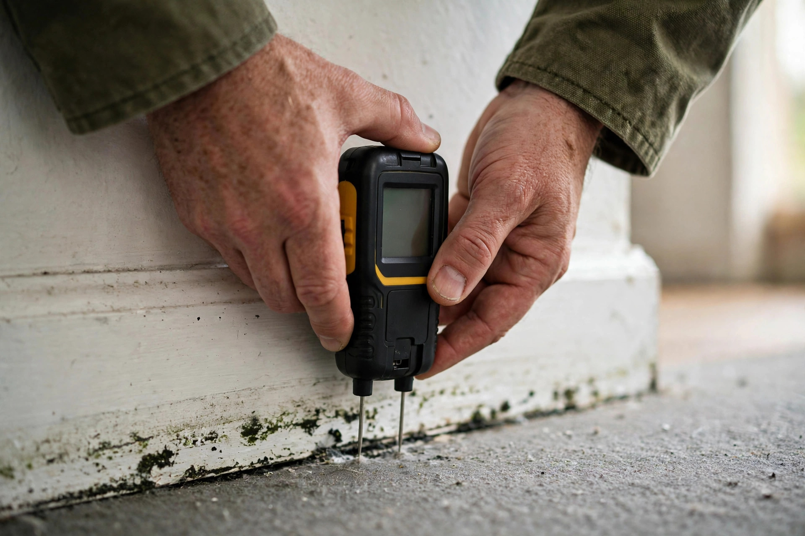
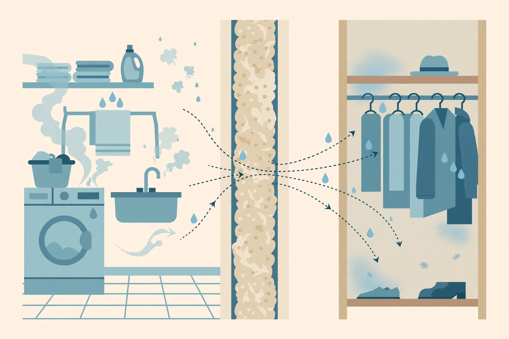

Mold Inspection in Boise, ID
An inspection answers three questions: is there mold, where is the water feeding it, and how much of the house is involved. You get those answers before anyone quotes a removal.
Reasons people book an inspection
Most calls start with a clue, not a visible colony.
- An earthy smell that’s stronger with the furnace onDucts in crawlspaces and basements can pull odor from below and spread it through every register.
- Allergy symptoms that ease when you leave homeCongestion or itchy eyes that clear up at work or on vacation are worth investigating.
- A past leak that was “dried with a fan”Surfaces dry quickly; the inside of a wall or subfloor often doesn’t.
- Warped baseboards or lifting laminateSwelling at floor level points to moisture coming from under the floor or inside the wall.
- Condensation pooling on window sills each winterCommon in Treasure Valley inversions; repeated wetting feeds growth in sills and corners.
- You’re buying a house with a basement or crawlspaceYour general home inspection may only note “evidence of moisture” without saying more.
What happens during the visit
Walk-through interview
When the smell started, past leaks, remodel history, who’s affected — the timeline narrows where to look.
Moisture mapping
Pin and pinless meters on walls, floors and framing; a thermal camera to spot cool, damp patches behind finishes.
Hidden-area checks
Crawlspace, attic, under sinks, behind the washer, and the HVAC air handler — the places growth hides first.
Findings & next step
A plain-language summary: what was found, the moisture source, and whether lab testing or remediation makes sense.
The EPA puts it plainly: there’s no mold control without moisture control — so the inspection focuses on the water source as much as the growth.
A typical inspection looks like this
Renter in a Garden City-area duplex with a smell in the hall closet
The tenant notices a musty odor near the hall closet that’s worse after laundry day. Nothing is visible. The landlord wants to know whether it’s a real problem before calling in trades.
- Moisture meter confirms a wet stud bay shared with the closet.
- Small inspection hole shows staining on the drywall back side.
- Recommendation: plumber fixes the drain box, then small-area removal.

Mold inspection FAQs
What’s the difference between a mold inspection and mold testing?
An inspection is the visual and moisture investigation — finding where water and growth are. Testing means taking samples for a lab. Many homes need only the inspection; testing is added when growth is hidden or you need documentation.
Does a regular home inspection check for mold?
Under standard practice, general home inspectors report visible moisture issues but usually don’t investigate mold specifically or take samples. If the report says “possible microbial growth,” that’s the cue for a dedicated mold inspection.
How long does a mold inspection take?
For an average Boise-area single-family home, expect one to two hours on site. Larger homes or ones with both an attic and a crawlspace to access take longer.
Should I clean the area before the inspector arrives?
No — leave it as is. Cleaning or painting over stains removes the evidence that helps pinpoint the source. Do move stored boxes away from walls and clear access to the crawlspace hatch and attic.
Can my landlord in Idaho ignore a mold problem?
Idaho landlord-tenant law (Idaho Code Title 6, Chapter 3) requires landlords to maintain habitable premises. The Idaho Attorney General publishes a landlord-tenant manual explaining written-notice steps.